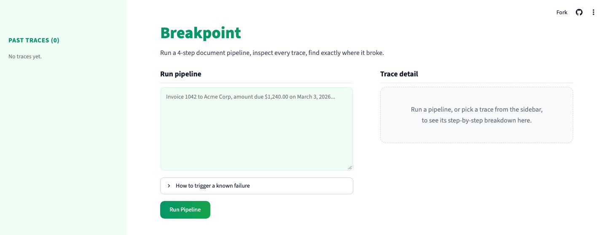
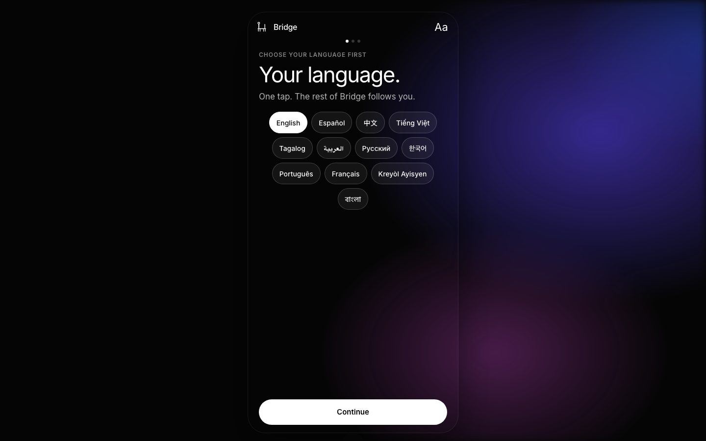
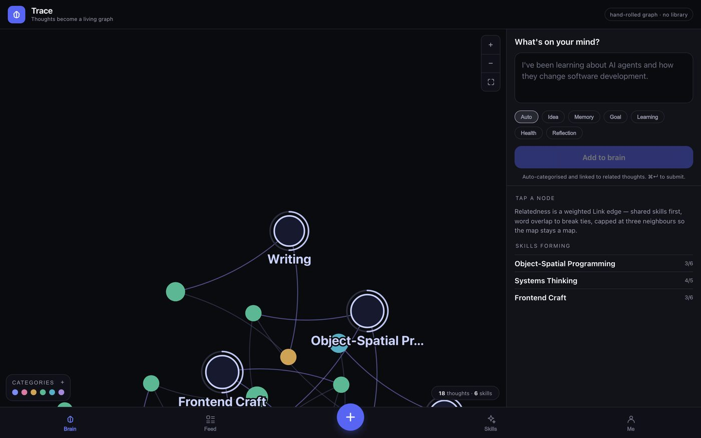

Introduction
I build AI products people actually use: an LLM tool adopted by hundreds of Stanford Medicine researchers, plus three apps with 1,000+ users combined. 2x hackathon winner (Google AI Hackathon, QuantHacks).
Projects


Experience
- Stanford School of Medicine — Research Intern 2025
- Google — Student Insight Programme 2025
- HSBC — Women in Technology Insight Programme 2026